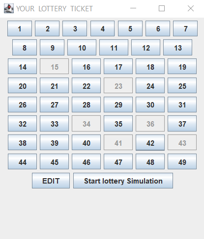
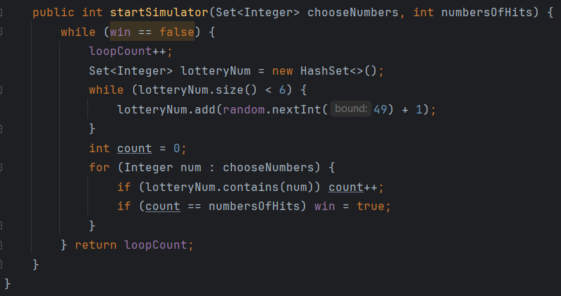

Symulator Lotto z Java Swing
Aplikacja służąca do symulacji losowania lotto. Ma ona za zadanie losować tak długo, aż padnie wcześniej wybrana przez nas ilość trafień (losowanie bez powtórzeń). Oprawa graficzna napisana w oparciu o Java Swing. Ciekawa logika biznesowa blokująca przyciski, które w danym momencie nie powinny zostać użyte
Kod funkcji odpowiadającej za prawidłowe losowanie:
Pracujmy razem!
Znajdź mnie:
 Github
Github  Linkedin
Linkedin